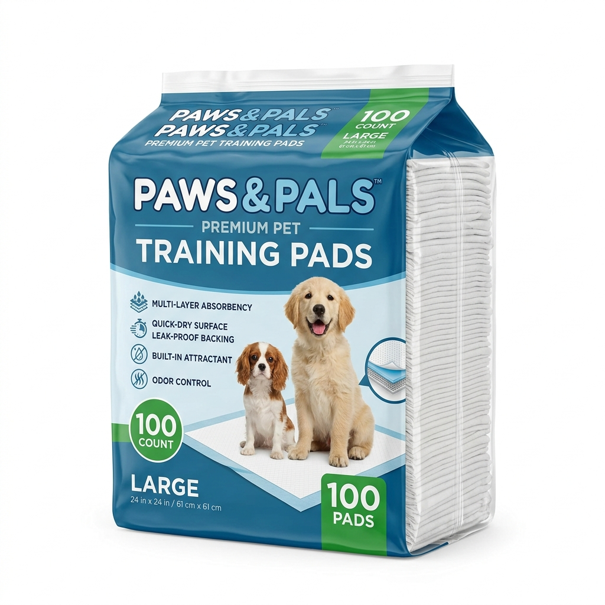
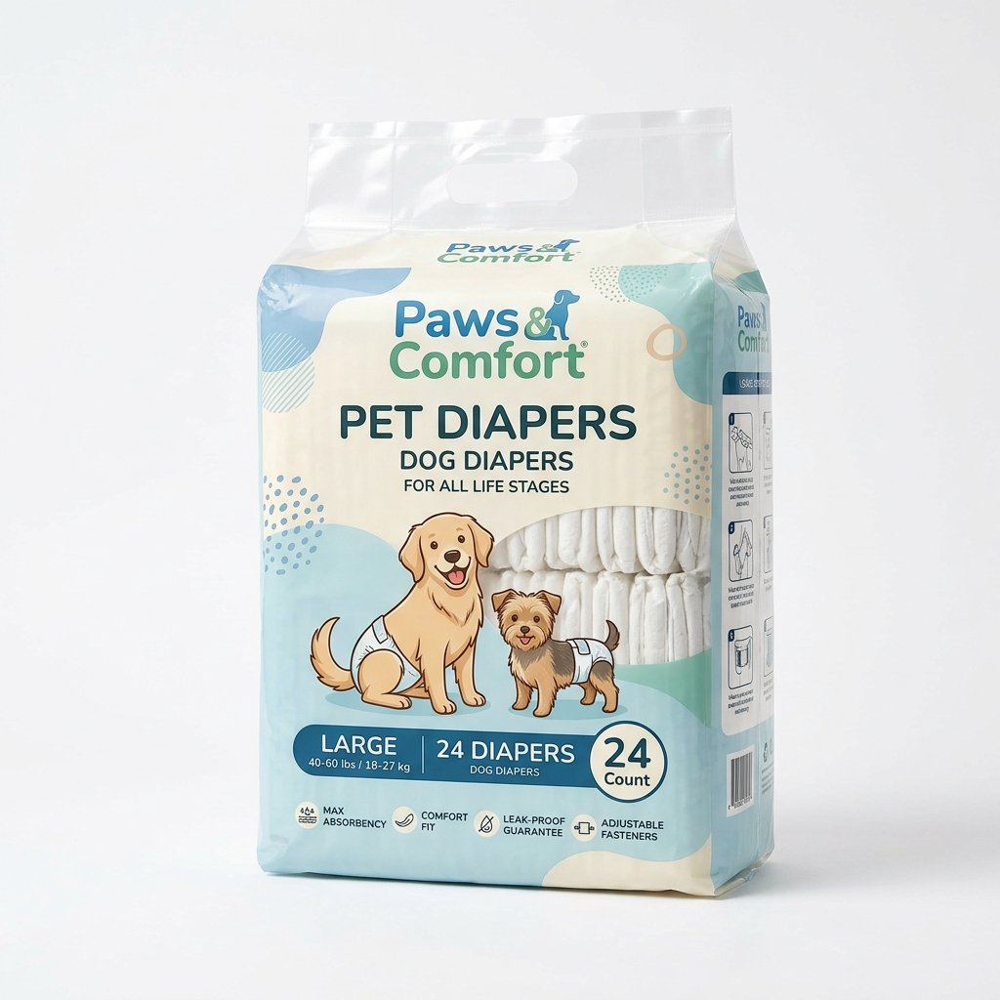

Produtos de Higiene e Limpeza
Manter a higiene do seu pet é fundamental para a saúde dele e de toda a família. Confira nossa linha completa de produtos de higiene e limpeza para animais de estimação:
Produto 1 — Tapete Higiênico para Cães — Pacote com 30 unidades

Descrição:
Tapete higiênico descartável de alta absorção, ideal para o treinamento de filhotes
e para uso em apartamentos. O tapete possui superfície super absorvente que retém
líquidos e odores com eficiência, mantendo o ambiente limpo e seco.
O sistema de fixação antiderrapante evita que o tapete se mova durante o uso.
Indicado para cães de todas as raças e tamanhos.
Características:
- Quantidade: 30 unidades por pacote
- Dimensões: 60 cm x 60 cm (cada tapete)
- Material: 5 camadas super absorventes
- Capacidade de absorção: até 1,5 litros por tapete
- Com agente neutralizador de odores
- Base antiderrapante
- Atrativo olfativo para adestramento
- Descartável e 100% biodegradável
Valor: R$ 49,90 (pacote com 30 unidades)
Produto 2 — Fralda Higiênica Descartável para Pets — Pacote com 12 unidades

Descrição:
Fralda higiênica descartável desenvolvida especialmente para animais de estimação.
Ideal para fêmeas no cio, animais idosos com incontinência urinária ou animais
em recuperação pós-cirúrgica. O velcro ajustável garante um encaixe perfeito
e confortável, sem restringir os movimentos do animal. O núcleo super absorvente
proporciona proteção por até 8 horas.
Características:
- Quantidade: 12 unidades por pacote
- Tamanhos disponíveis: PP, P, M, G e GG
- Indicado para: Fêmeas no cio, animais idosos ou em recuperação
- Fechamento com velcro ajustável
- Núcleo super absorvente — até 8 horas de proteção
- Com orifício para o rabo
- Gel absorvente que solidifica o líquido
- Camada externa à prova d'água
Valor: R$ 39,90 (pacote com 12 unidades)
Dúvidas? Entre em contato: (11) 3456-7890 | contato@patafeliz.com.br